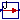

This package consists of blocks that convert an input signal with a specific unit to an output signal in another unit (e.g. conversion of an angle signal from "deg" to "rad"). Block "ConvertAllUnits" converts between a set of units that can be selected in a pull-down menu of the parameter menu. All other blocks convert exactly between two different units.
| Name | Description |
|---|---|
| Convert from Kelvin to °Celsius | |
| Convert from °Celsius to Kelvin | |
| Convert from Kelvin to °Fahrenheit | |
| Convert from °Fahrenheit to Kelvin | |
| Convert from Kelvin to °Rankine | |
| Convert from °Rankine to Kelvin | |
| Convert from radian to degree | |
| Convert from degree to radian | |
| Convert from radian per second to revolutions per minute | |
| Convert from revolutions per minute to radian per second | |
| Convert from metre per second to kilometre per hour | |
| Convert from kilometre per hour to metre per second | |
| Convert from second to day | |
| Convert from day to second | |
| Convert from second to hour | |
| Convert from hour to second | |
| Convert from second to minute | |
| Convert from minute to second | |
| Convert from cubic metre to litre | |
| Convert from litre to cubic metre | |
|  To_kWh | Convert from Joule to kilo Watt hour |
| Convert from kilo Watt hour to Joule | |
| Convert from Pascal to bar | |
| Convert from bar to Pascal | |
| Convert from kilogram per second to gram per second | |
| Convert from gram per second to kilogram per second |
 Modelica.Blocks.Math.UnitConversions.To_degC
Modelica.Blocks.Math.UnitConversions.To_degC
This block converts the input signal from Kelvin to °Celsius and returns the result as output signal.
Extends from Modelica.Blocks.Interfaces.PartialConversionBlock (Partial block defining the interface for conversion blocks). Modelica.Blocks.Math.UnitConversions.From_degC
Modelica.Blocks.Math.UnitConversions.From_degC
This block converts the input signal from °Celsius to Kelvin and returns the result as output signal.
Extends from Modelica.Blocks.Interfaces.PartialConversionBlock (Partial block defining the interface for conversion blocks).
This block converts the input signal from Kelvin to °Fahrenheit and returns the result as output signal.
Extends from Modelica.Blocks.Interfaces.PartialConversionBlock (Partial block defining the interface for conversion blocks). Modelica.Blocks.Math.UnitConversions.From_degF
Modelica.Blocks.Math.UnitConversions.From_degF
This block converts the input signal from °Fahrenheit to Kelvin and returns the result as output signal.
Extends from Modelica.Blocks.Interfaces.PartialConversionBlock (Partial block defining the interface for conversion blocks). Modelica.Blocks.Math.UnitConversions.To_degRk
Modelica.Blocks.Math.UnitConversions.To_degRk
This block converts the input signal from Kelvin to °Rankine and returns the result as output signal.
Extends from Modelica.Blocks.Interfaces.PartialConversionBlock (Partial block defining the interface for conversion blocks). Modelica.Blocks.Math.UnitConversions.From_degRk
Modelica.Blocks.Math.UnitConversions.From_degRk
This block converts the input signal from °Rankine to Kelvin and returns the result as output signal.
Extends from Modelica.Blocks.Interfaces.PartialConversionBlock (Partial block defining the interface for conversion blocks). Modelica.Blocks.Math.UnitConversions.To_deg
Modelica.Blocks.Math.UnitConversions.To_deg
This block converts the input signal from radian to degree and returns the result as output signal.
Extends from Modelica.Blocks.Interfaces.PartialConversionBlock (Partial block defining the interface for conversion blocks). Modelica.Blocks.Math.UnitConversions.From_deg
Modelica.Blocks.Math.UnitConversions.From_deg
This block converts the input signal from degree to radian and returns the result as output signal.
Extends from Modelica.Blocks.Interfaces.PartialConversionBlock (Partial block defining the interface for conversion blocks).
This block converts the input signal from radian per second to revolutions per minute and returns the result as output signal.
Extends from Modelica.Blocks.Interfaces.PartialConversionBlock (Partial block defining the interface for conversion blocks). Modelica.Blocks.Math.UnitConversions.From_rpm
Modelica.Blocks.Math.UnitConversions.From_rpm
This block converts the input signal from revolutions per minute to radian per second and returns the result as output signal.
Extends from Modelica.Blocks.Interfaces.PartialConversionBlock (Partial block defining the interface for conversion blocks). Modelica.Blocks.Math.UnitConversions.To_kmh
Modelica.Blocks.Math.UnitConversions.To_kmh
This block converts the input signal from metre per second to kilometre per hour and returns the result as output signal.
Extends from Modelica.Blocks.Interfaces.PartialConversionBlock (Partial block defining the interface for conversion blocks). Modelica.Blocks.Math.UnitConversions.From_kmh
Modelica.Blocks.Math.UnitConversions.From_kmh
This block converts the input signal from kilometre per hour to metre per second and returns the result as output signal.
Extends from Modelica.Blocks.Interfaces.PartialConversionBlock (Partial block defining the interface for conversion blocks). Modelica.Blocks.Math.UnitConversions.To_day
Modelica.Blocks.Math.UnitConversions.To_day
This block converts the input signal from second to day and returns the result as output signal.
Extends from Modelica.Blocks.Interfaces.PartialConversionBlock (Partial block defining the interface for conversion blocks). Modelica.Blocks.Math.UnitConversions.From_day
Modelica.Blocks.Math.UnitConversions.From_day
This block converts the input signal from day to second and returns the result as output signal.
Extends from Modelica.Blocks.Interfaces.PartialConversionBlock (Partial block defining the interface for conversion blocks). Modelica.Blocks.Math.UnitConversions.To_hour
Modelica.Blocks.Math.UnitConversions.To_hour
This block converts the input signal from second to hour and returns the result as output signal.
Extends from Modelica.Blocks.Interfaces.PartialConversionBlock (Partial block defining the interface for conversion blocks). Modelica.Blocks.Math.UnitConversions.From_hour
Modelica.Blocks.Math.UnitConversions.From_hour
This block converts the input signal from hour to second and returns the result as output signal.
Extends from Modelica.Blocks.Interfaces.PartialConversionBlock (Partial block defining the interface for conversion blocks).
This block converts the input signal from second to minute and returns the result as output signal.
Extends from Modelica.Blocks.Interfaces.PartialConversionBlock (Partial block defining the interface for conversion blocks). Modelica.Blocks.Math.UnitConversions.From_minute
Modelica.Blocks.Math.UnitConversions.From_minute
This block converts the input signal from minute to second and returns the result as output signal.
Extends from Modelica.Blocks.Interfaces.PartialConversionBlock (Partial block defining the interface for conversion blocks). Modelica.Blocks.Math.UnitConversions.To_litre
Modelica.Blocks.Math.UnitConversions.To_litre
This block converts the input signal from metre to litre and returns the result as output signal.
Extends from Modelica.Blocks.Interfaces.PartialConversionBlock (Partial block defining the interface for conversion blocks).
This block converts the input signal from litre to cubic metre and returns the result as output signal.
Extends from Modelica.Blocks.Interfaces.PartialConversionBlock (Partial block defining the interface for conversion blocks). Modelica.Blocks.Math.UnitConversions.To_kWh
Modelica.Blocks.Math.UnitConversions.To_kWh
This block converts the input signal from Joule to kilo Watt hour and returns the result as output signal.
Extends from Modelica.Blocks.Interfaces.PartialConversionBlock (Partial block defining the interface for conversion blocks).
This block converts the input signal from kilo Watt hour to Joule and returns the result as output signal.
Extends from Modelica.Blocks.Interfaces.PartialConversionBlock (Partial block defining the interface for conversion blocks).
This block converts the input signal from Pascal to bar and returns the result as output signal.
Extends from Modelica.Blocks.Interfaces.PartialConversionBlock (Partial block defining the interface for conversion blocks). Modelica.Blocks.Math.UnitConversions.From_bar
Modelica.Blocks.Math.UnitConversions.From_bar
This block converts the input signal from bar to Pascal and returns the result as output signal.
Extends from Modelica.Blocks.Interfaces.PartialConversionBlock (Partial block defining the interface for conversion blocks). Modelica.Blocks.Math.UnitConversions.To_gps
Modelica.Blocks.Math.UnitConversions.To_gps
This block converts the input signal from kilogram per second to gram per seconds and returns the result as output signal.
Extends from Modelica.Blocks.Interfaces.PartialConversionBlock (Partial block defining the interface for conversion blocks). Modelica.Blocks.Math.UnitConversions.From_gps
Modelica.Blocks.Math.UnitConversions.From_gps
This block converts the input signal from gram per second to kilogram per second and returns the result as output signal.
Extends from Modelica.Blocks.Interfaces.PartialConversionBlock (Partial block defining the interface for conversion blocks). HTML-documentation generated by Dymola Thu Jan 29 17:26:09 2009.